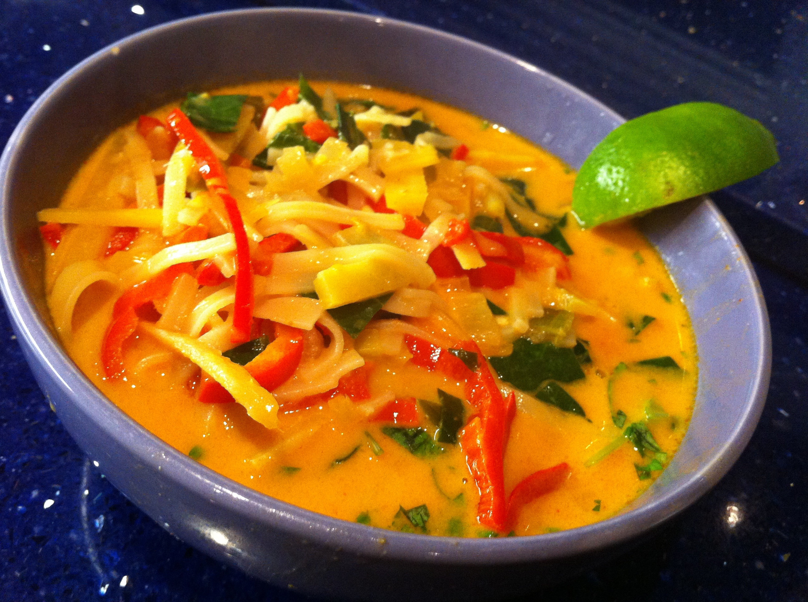
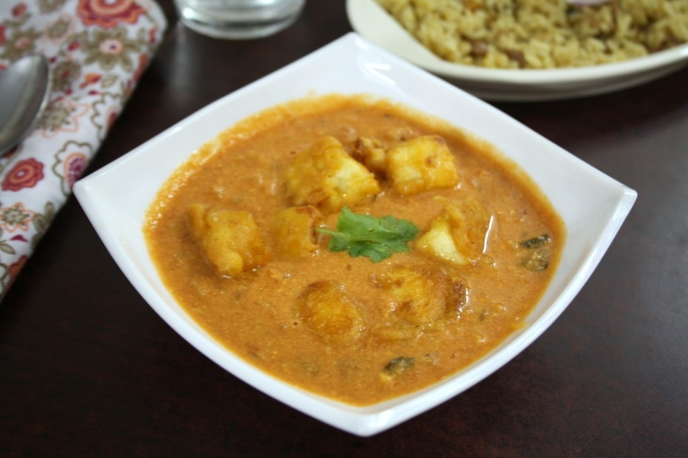
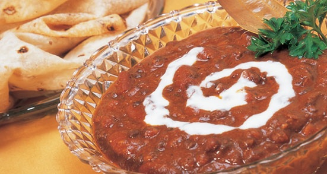

|
|
SIMPLE THAI RED CURRY
 |
INGREDIENTS
4 cups Coconut milk
3 tbsp Thai red curry paste
3 cups Baby corn (roughly chopped),
mushrooms (halved) and broccoli (cut
into florets)
2 tsp Sugar
1 tsp Salt
6 Kaffir lime leaves, halved
2 Fresh red chillies, each sliced
lengthwise into 8 pieces
½ cup Thai basil leaves, optional
METHOD
In a large bowl, mix 1 cup of the coconut milk and
the red curry paste. Microwave, covered, on HIGH for
4 minutes. Stir well. Microwave vegetables with ¼
cup water, covered, on HIGH for 3 minutes. Remove
veggies and drain water. Add the vegetables and
remaining coconut milk, sugar, salt, kaffir lime leaves
and chillies to the curry paste. Microwave on 600W
for 6 minutes or until the vegetables are cooked but
not soft. Remove. Stir well. Garnish with Thai basil.
Serve with steamed rice. |
Tip: Covering food with a plastic wrap can help foods retain moisture and
cook more evenly. Remember to allow a small gap between the food and the
wrap, and leave one corner open to allow steam to escape. |
PANEER PESHAWARI
 |
INGREDIENTS
½ cup Paneer, cut into ½" cubes
1 tbsp Cashew nuts
½ tsp Chopped ginger
1 tsp Finely chopped green chillies
2 tbsp Mawa (khoya)
3 Cardamoms
2 Cloves
1 tbsp Onion paste
½ cup Milk
1 tbsp Cream
2 tsp Oil
A pinch of sugar
Salt to taste
A pinch of white pepper powder
FOR GARNISHING
4 strands Saffron (kesar), diluted in 1 tsp of
water
2 tsp Almond (badam) slivers
METHOD
Combine cashew nuts, ginger, green chillies, mawa
and 2 cardamoms. Blend to a fine paste in a mixer.
Keep aside. Mix the oil, the remaining 1 cardamom,
cloves and onion paste in a microwave-proof bowl.
Microwave on HIGH for 3 minutes. Stir once inbetween
after 1½ minutes. Add the prepared paste.
Mix well. Microwave on HIGH for 2 minutes. Add
white pepper powder, milk, sugar and salt. Mix well.
Add paneer. Microwave on HIGH for 1 minute. Add
cream. Mix gently. Garnish with saffron and
almonds. Serve hot. |
|
|
MAHARANI DAL
 |
INGREDIENTS
1 cup Black Urad Dal, whole
3 cups Water
1 tsp Salt
½ cup Butter
2½ tsp Ginger paste
3½ tsp Garlic paste
1 tsp Kashmiri chilli powder
1 cup Fresh tomato purée
¾ cup Cream
½ tsp Garam masala powder
METHOD
Wash dal 4 times till you get transparent water. Soak
overnight in warm water. Drain. Mix dal with 5 cups
of water in a very large bowl. Add salt. Microwave,
covered, on HIGH for 40 minutes until the dal is
cooked. Mash the dal lightly. Add butter, ginger and
garlic pastes, chilli powder and the tomato purée.
Microwave on HIGH for 6 minutes. Stir well. Add ½
cup cream. Microwave on 600W for another 3
minutes. Serve hot with the remaining cream on top.
Sprinkle garam masala. |
Tip: A microwave cooks food
using its own moisture, so reduce
the liquid used by almost half the
normal quantity. |

|
|
.jpg)